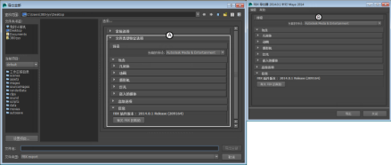
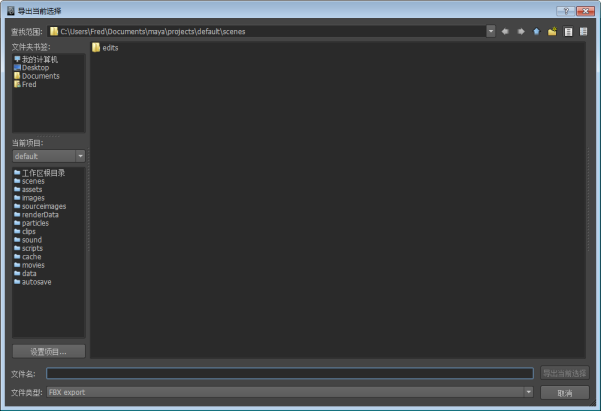

本部分介绍当您从“文件”(File)菜单中选择 Maya 导入和导出功能时，显示在 Maya“导入”(Import)或“导出”(Export)对话框右侧“常规选项”(General options)下方的 Maya FBX 插件用户界面。
FBX 选项和菜单包含在可以展开和收拢的卷展栏菜单内。

Maya“导出全部”(Export All)窗口 A. FBX 导出器选项
切换 FBX UI
可以采用以下两种方法使用 Maya FBX 插件：“本地操作系统”(OS Native) UI（在独立的导入器/导出器窗口中显示插件）或“Maya 默认”(Maya Default)（在 Maya“导入”(Import)或“导出”(Export)对话框中将插件显示为选项）。

FBX UI 的两个版本：A. Maya 默认 B. 本地操作系统
更改 UI
要在“本地操作系统”(OS Native)的“经典”外观 UI 和“Maya 默认”(Maya Default)UI 之间切换，请选择“窗口”(Window)>“设置/首选项”(Settings/Preferences)>“首选项”(Preferences)。在“首选项”(Preferences)对话框中，找到“文件/项目”(Files/Projects)并向下滚动到“文件对话框”(File Dialog)选项。
也可以创建您自己的预设。请参见创建自定义预设。
隐藏 UI
如果将中央分隔条拖动到右侧，当插件采用“Maya 默认”(Maya Default)设置时，可以将其隐藏。这将收拢 FBX 插件的选项。
